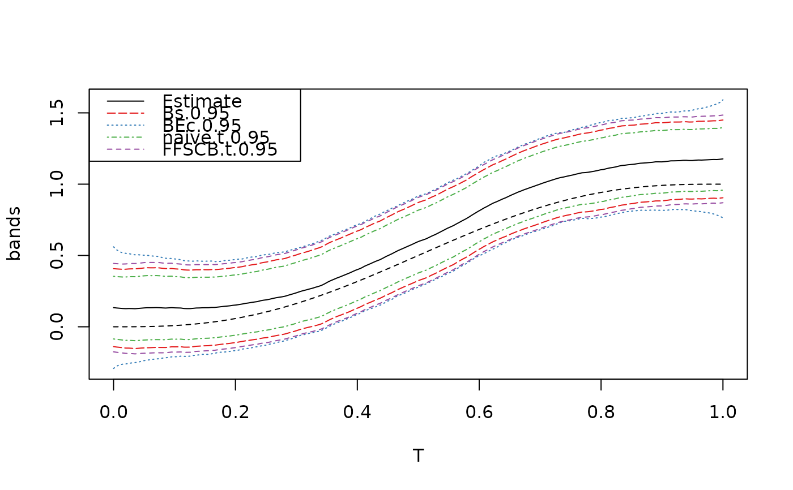

Makes confidence bands
confidence_band.RdMakes confidence bands
Usage
confidence_band(
x,
cov.x,
tau = NULL,
df = NULL,
type = c("FFSCB.z", "FFSCB.t", "BEc", "Bs", "naive.t"),
conf.level = 0.95,
grid.size = 200,
Bs.sim.size = 10000,
n_int = 4
)Arguments
- x
Functional parameter estimate (for instance, the empirical mean function). It can be either a vector or fd object from the fda package.
- cov.x
Cov(x), in which x is the functional estimator (for instance, the covariance function of the empirical mean function). It can be either matrix or bifd object from fda. The eigen decomposition of Cov(X) can be used instead.
- tau
Pointwise standard deviation of the standardized and differentiated sample functions. Can be estimated by tau_fun().
- df
Degrees of freedom parameter for the t-distribution based bands 'FFSCB.t' and 'naive.t'. If x is the empirical mean function, set df=n-1, where n denotes the sample size.
- type
The band(s) to be constructed.
FFSCB.z : Fast'n'Fair (adaptive) simultaneous confidence band based for a Gaussian functional parameter estimate.
FFSCB.t : Fast'n'Fair (adaptive) simultaneous confidence band based for a t-distributed functional parameter estimate.
BEc : The suggested modified Scheffe style band from hyper-ellipsoie Ec, which uses up to the very last dimension.
Bs : Parametric bootstrap simultaneous confidence band, similar to the one appeard in Degras(2011) (for comparision purpose)
naive.t : A collection of point-wise t-intervals. (for comparision purpose)
- conf.level
A vector of confidence levels for the bands to achieve.
- grid.size
This determines on how fine grid the bands will be constructed before converted as an `fd' object. This parameter is used only when 'x' is fd object and 'cov.x' is bifd object.
- Bs.sim.size
This determines bootstrap sample size for Bs
- n_int
Number of intervals for the piecewise linear confidence bounds.
Value
confidence_band Either a collection of vector valued bands or `fd' object whose objectname is changed to confidence_band.
References
Liebl, D. and Reimherr, M. (2021+). Fast and fair simultaneous confidence bands.
Choi, H. and Reimherr, M. (2018). A geometric approach to confidence regions and bands for functional parameters. Journal of the Royal Statistical Society: Series B (Statistical Methodology) 80 239-260.
Examples
# Generate a sample
p <- 200
N <- 80
grid <- make_grid(p, rangevals=c(0,1))
mu0 <- meanf_poly(grid,c(0,1))
names(mu0) <- grid
mu <- meanf_poly(grid,c(0,1.1))
names(mu) <- grid
cov.m <- make_cov_m(cov.f = covf_st_matern, grid=grid, cov.f.params=c(2/2,1))
sample <- make_sample(mu,cov.m,N)
# Compute the estimate and its covariance
hat.mu <- rowMeans(sample)
hat.cov <- crossprod(t(sample - hat.mu)) / N
hat.cov.mu <- hat.cov / N
# Compute the tau-parameter
hat.tau <- tau_fun(sample)
# Make and plot confidence bands
b <- confidence_band(x=hat.mu, cov.x=hat.cov.mu, tau=hat.tau, df=N-1,
type=c("FFSCB.t", "Bs","BEc","naive.t"),
conf.level = 0.95, n_int=4)
plot(b)
lines(x=grid, y=mu0, lty=2)
